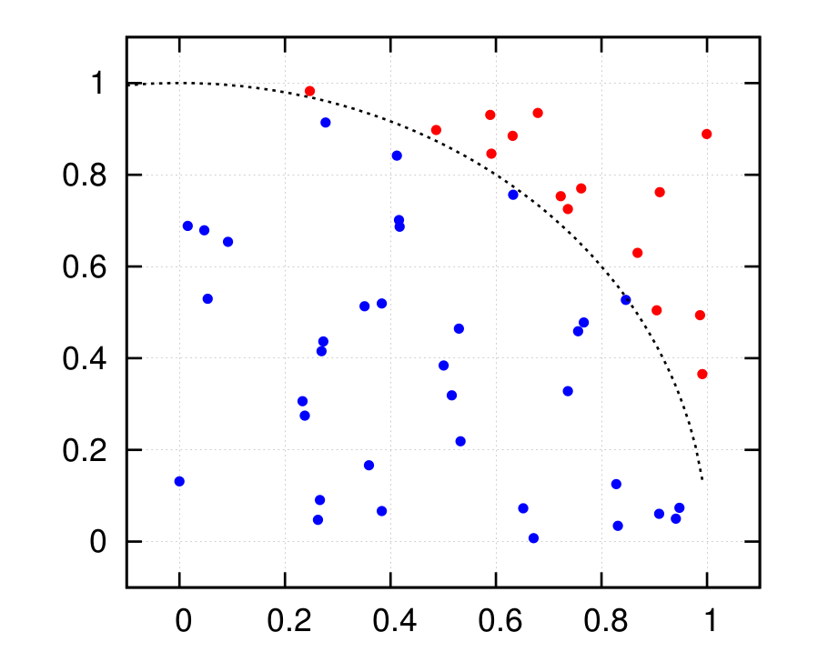
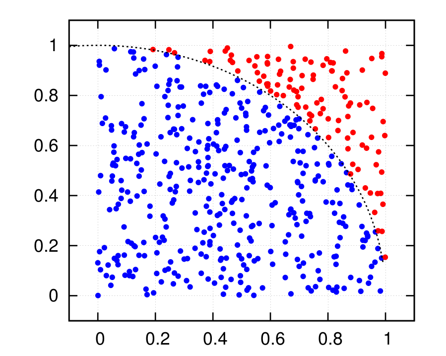
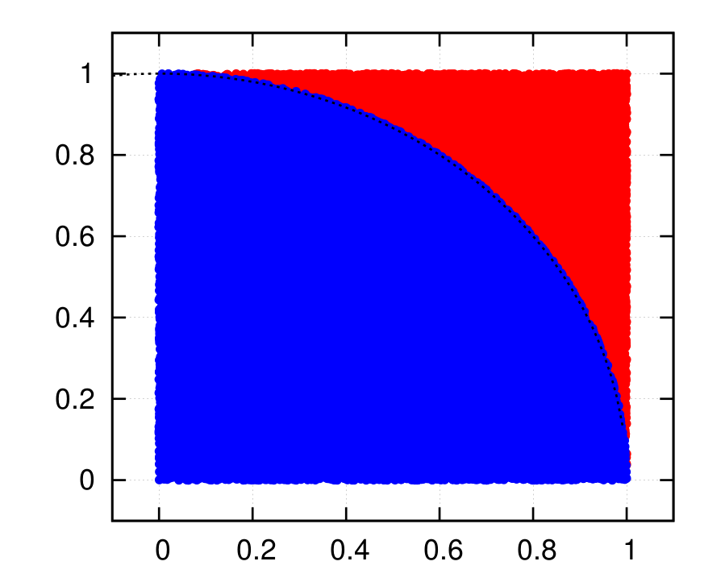
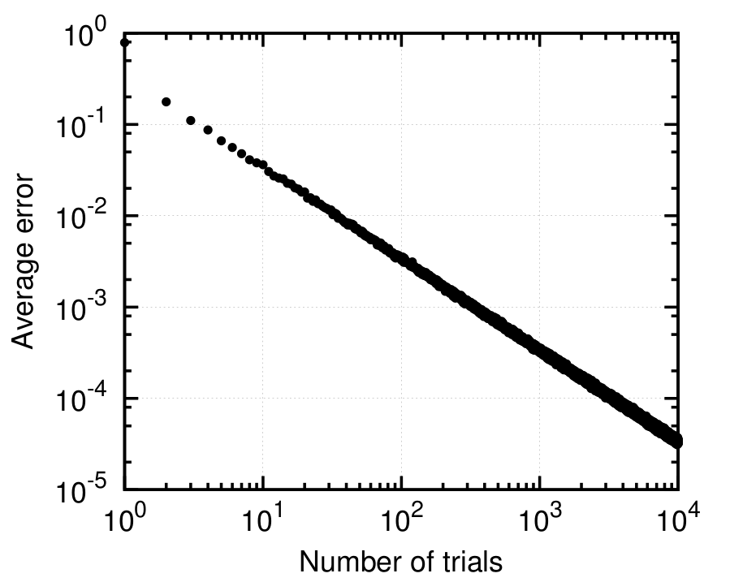
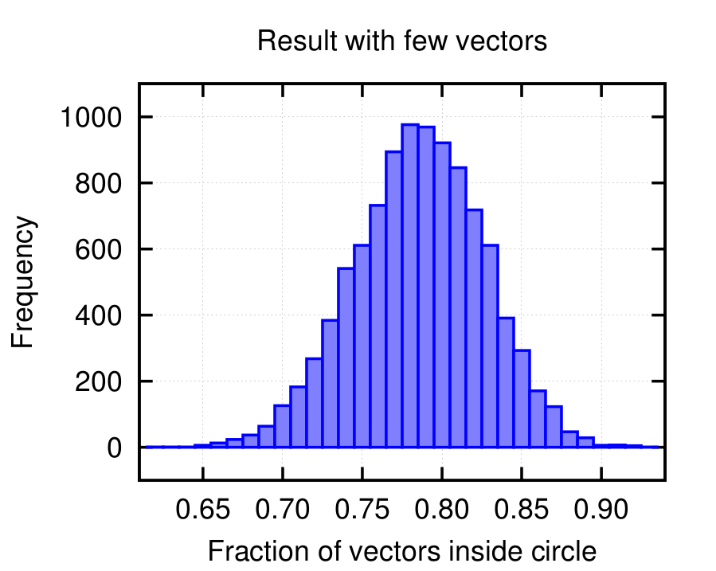
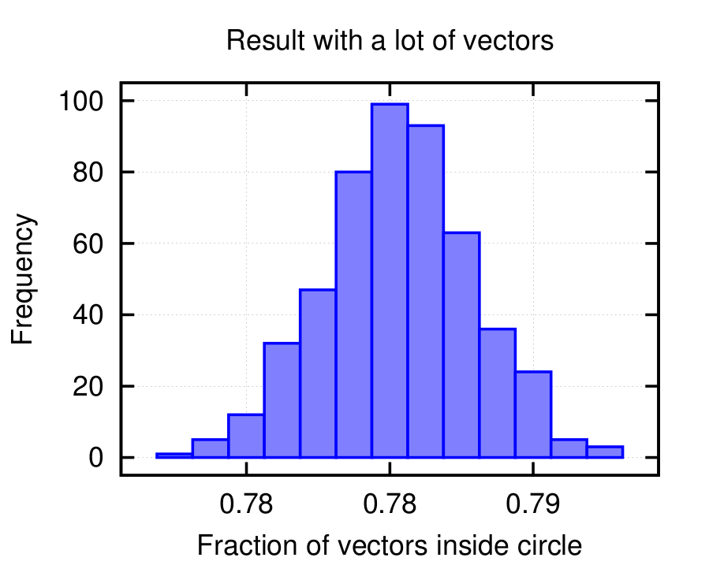

|
Para contato comigo:
Sala 5 do FFI (Bloco A) - Phone 3373 8777 thiago dot mosqueiro at ifsc dot usp dot br |
Image from Gigandet et al. (2008) PLoS ONE 3(12): e4006. doi:10.1371/journal.pone.0004006
A seguir, algumas dicas e provocações sobre o problema 6 da lista 2 -- calcular a área de uma esfera de N dimensões usando vetores aleatoriamente gerados. Clique nos gráficos para vê-los no tamanho original. A seguir vou mostrar alguns resultados gráficos que podem ajudar na visualização do problema quando a dimensão é N=2 (ou seja, estamos calculando a área de uma circunferência).
A ideia é gerar vetores cujas componentes são uniformemente geradas entre 0 e 1, o que significa que elas estão restritas a um cubo (em nosso presente caso, quadrado) de lados unitários. Veja abaixo os vetores gerados nos gráficos abaixo. Pontos azuis são vetores que cairam dentro da circunferência (linha preta tracejada), os vermelhos cairam fora.
 Se forem gerados vetores o suficiente, é possível cobrir completamente o plano (apesar de não parecer, há pontos separados no gráfico abaixo).
A partir daí, basta calcular a área da circunferência a partir da fração dos vetores que cairam dentro dela (você consegue formalizar este raciocínio?). Note que esta é apenas um quarto da circunferência.
Como os vetores são gerados a partir de números aleatórios, é de se esperar que haja uma flutuação em seus resultados. Se você rodar seu programa diversas vezes, ele dá resultados diferentes? O que seria esperado?
Além dessa flutuação, essa estimativa da área se torna tão boa quanto mais vetores forem gerados. Abaixo eu calculei o erro médio cometido nessa estimativa em função do número de vetores que são utilizados. Um desafio seria você tentar gerar uma versão sua deste gráfico.
Como existe essa variabilidade inerente à nossa estimativa, ao rodar o programa diversas vezes, a fração dos vetores que cai dentro da circunferência acaba saindo um pouco diferente. Podemos calcular a frequência com que observamos cada valor desta fração e construirmos um histograma. Veja abaixo que conforme o número de vetores que são gerados nesse processo cresce, vemos que as frequências se localizam por volta de 0.78. Isto é um reflexo direto da convergência do processo e resultado de um teorema central em toda a física estatística: teorema central do limite.
 Você certamente não precisa fazer todos esses testes, mas é importante compreender o que está acontecendo no seu programa (até mesmo para solucionar rapidamentes bugs) e estes gráficos podem ajudar bastante.
No que escrevi sobre o cálculo de volume de esfera, adiantei que poderia ocorrer algo estranho na geração de números aleatórios. Tente escrever um programa em Fortran que gere N=10 números aleatórios. Rode esse programa algumas vezes e você notará que todos os números são exatamente os mesmos.
Existem diversos algoritmos para gerar números aleatórios (ou em alguns casos pseudo-aleatórois). Esses algoritmos muitas vezes são determinísticos (i.e., não existe nenhum tipo de aleatoriedade intrínseca). Eles apenas garantem que a sequência que eles geram é segue uma lei de distribuição de probabilidade, sendo na maioria das vezes uma distribuição uniforme da qual podemos construir outras distribuições. Por esse motivo, os gerados costumam deixar em aberto uma espécie de "inicializador", uma semente (dae o nome seeds) a partir da qual eles começam a gerar sua sequência. Isso faz com que possamos gerar diferentes sequências, todas com a mesma distribuição de probabilidade, a partir de diferentes seeds.
Abaixo deixo um programa exemplo de como configurar o SEED. Tente compilar esse código e o execute assim: ./random 1 (em vez de "random" use o nome do executável que você criou). Se você rodá-lo novamente usando ./random 1 ele apresentará o memso número aleatório. No entanto, se você rodar ./random 100, ele apresentará outro número aleatório. Para não precisar ficar modificando à mão, use ./random $RANDOM. Você verá que a cada vez que você roda o programa dessa forma, ele apresentará um número diferente.
Note que em vez de rand(), eu uso a função ran1(), definida no fim do arquivo random.f
Se quiser usar isso em seu código, o que você precisa é:
{kind=link}
{kind=link}
{kind=link}
{kind=link}
{kind=link}
{kind=link}